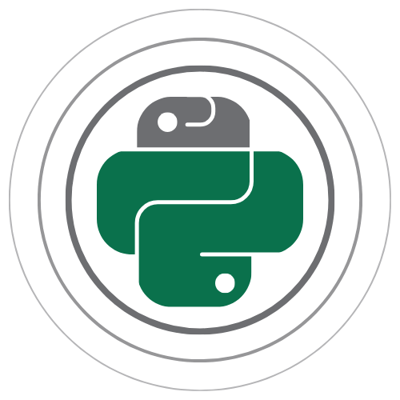

Morelia 
The Hitchhiker’s Guide to Morelia 🐍
Harnessing Data Acquisition Systems ğŸ¤
Controlling Sleep Deprivation Systems 😴
Wielding Stimulus Controllers 🤺
Morelia
Morelia package
Subpackages
Morelia.Commands package
Morelia.Devices package
Morelia.Parameters package
Morelia.Stream package
Morelia.packet package
Morelia.signal package
Module contents
Morelia
Morelia
Morelia package
Morelia.Devices package
View page source
Morelia.Devices package

Subpackages

Morelia.Devices.SerialPorts package
Submodules
Morelia.Devices.SerialPorts.PortAccess module
Morelia.Devices.SerialPorts.SerialComm module
Module contents
Submodules

Morelia.Devices.BasicPodProtocol module

Morelia.Devices.PodDevice_8206HR module

Morelia.Devices.PodDevice_8229 module

Morelia.Devices.PodDevice_8274D module

Morelia.Devices.PodDevice_8401HR module

Morelia.Devices.PodDevice_8480SC module

Morelia.Devices.aquisition_device module

Morelia.Devices.preamp module

Module contents
